HOMER
From brand
guidelines to
real content.
A client project I took further, exploring how one brand could feel warm to homeowners and professional to businesses, from identity and strategy to app, website and social content.
Project facts
Self-initiated concept, 2026 · Solo
Role: Brand & content
Brand strategy · Visual identity · Tone of voice · Content strategy · Social content · Art direction · AI image & video generation
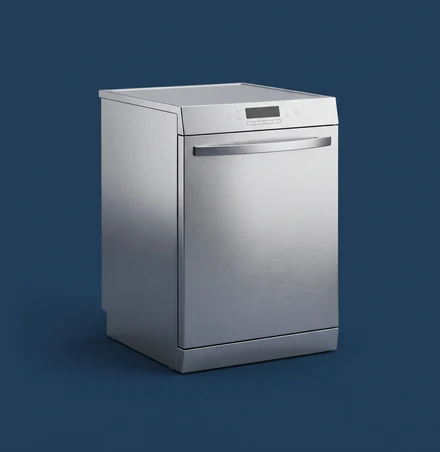
The challenge
As Homer grew, it also started looking at business customers. That meant talking to two very different audiences: homeowners who want less paperwork, and partners like realtors and property developers who want happier buyers. One brand had to work for both.
What I did
2024: client contact, research, personas and communication guidelines, but no real content. In 2026, I came back to finish the story.
2026: a new visual identity, messaging, content strategy and social content for Instagram and LinkedIn.
The result
Homer later told us they used our work as inspiration.
“The Hyper Island team gave us a fresh, outside view of our brand that inspired our current branding.”
Orange Wheel · #F57D11
From our 2024 mood board, in Homer’s brand today.
One brand, two audiences
One brand, two audiences.
Two taglines from one brand platform. Same voice, different benefit.
Warm meets smart
Professional for business, warm for homeowners. Navy and blues are the colours real estate and tech brands use. Amber adds the warmth of home. Poppins does both: clean and friendly.
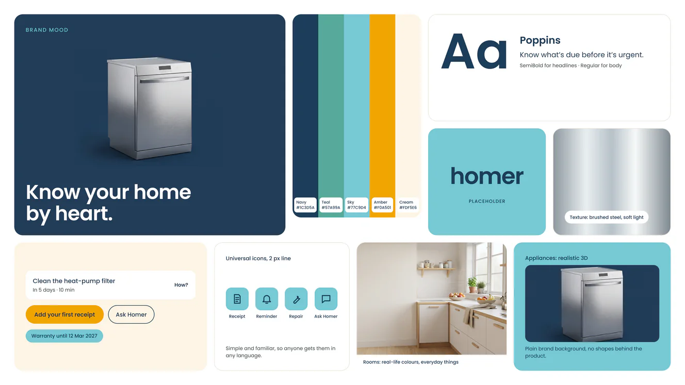
Homeowners · main tagline
“Know your home by heart.”
For people who want less paperwork.
Partners · B2B line
“Hand over the keys, not the worry.”
For realtors and property developers who want happier buyers.
Tone of voice · 2026Calm and plain.
| Rule | We say | We don’t say |
|---|---|---|
| Calm, not alarming | “Your boiler service is due in three weeks. Want a reminder?” | “Your home could be at risk!” |
| Plain, not technical | “Snap the receipt. We’ll find the manual.” | “AI-powered document management.” |
Each channel has one job
Each channel has one job.
One audience and one goal I could measure, per channel.
Homeowners
Instagram carousel
Goal: Saves and shares, then installs
Real estate partners
LinkedIn
Goal: Demo requests
Partners
Website
Goal: Book a demo
Everyone
Instagram reel
Goal: Reach and comments
Content pillarsHelp first, sell second.
50%
Home know-how
30%
Every home has a story
20%
Inside Homer
Content in action
Content in action.
Every piece follows the same plan: useful first, Homer as the answer at the end.
Instagram carousel · homeowners“5 signs your dishwasher needs attention”
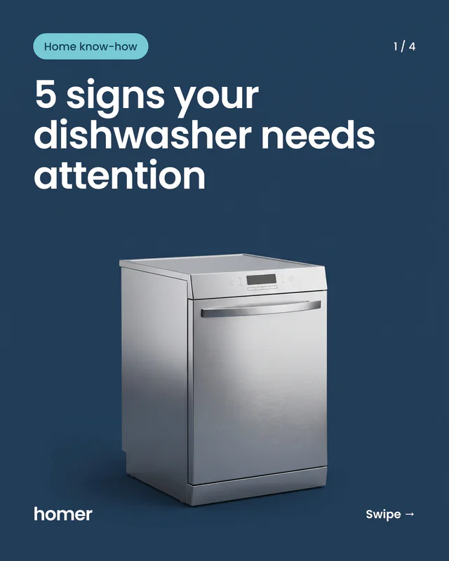
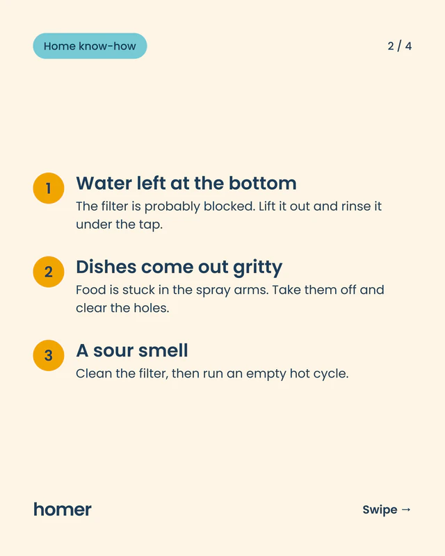
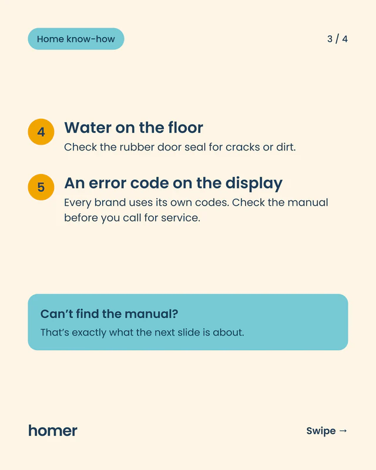
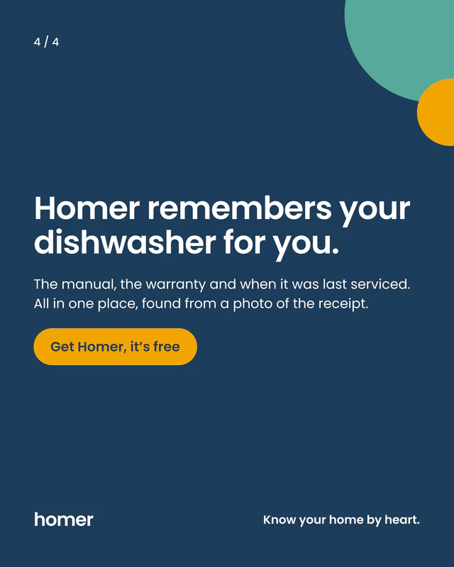
LinkedIn · partnersOne product, two benefits.
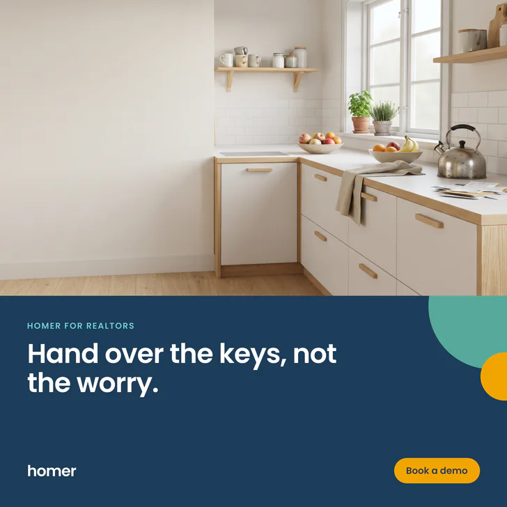
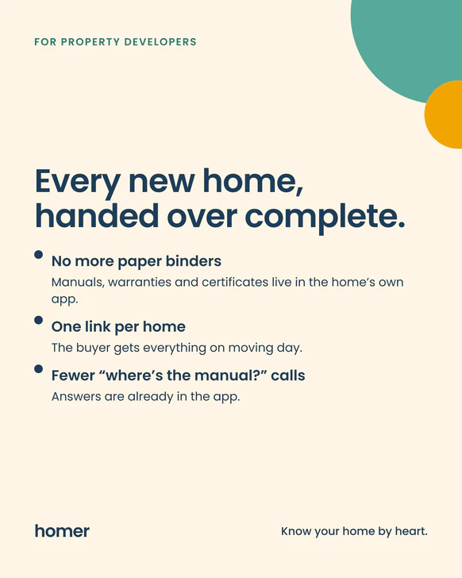
Website + app
Partners on the web, homeowners in the app.
One brand, two products. The website sells Homer to realtors and property developers. The app helps homeowners every day.
Website · partnersHomer for partners

App · homeownersNever lose it. Stay ahead. Ask anything.
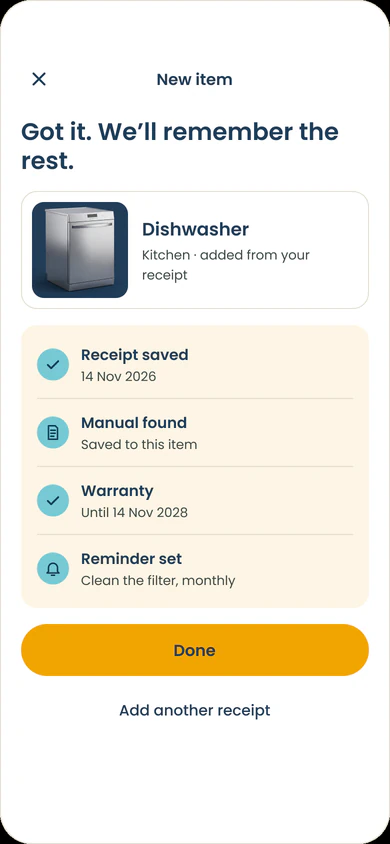
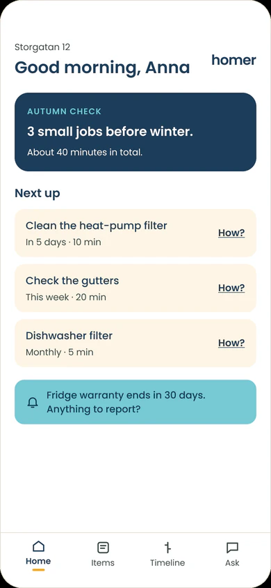
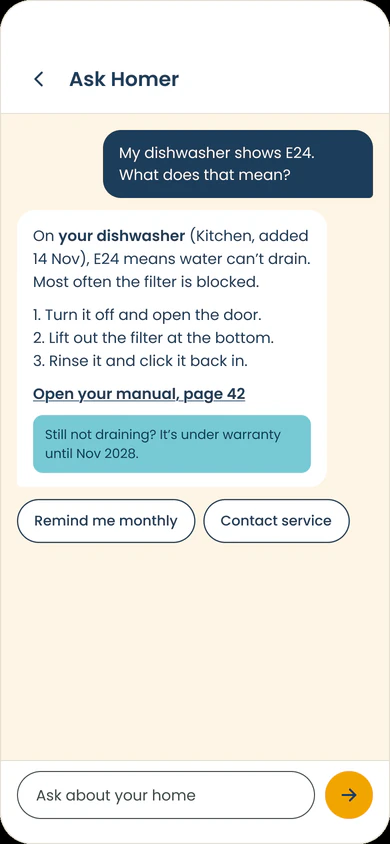
The reel
“Where are your receipts?”
A messy drawer of receipts empties, and Homer keeps them.
I generated the scenes in Gemini (Nano Banana), turned them into video in Magnific (Kling), then edited everything in CapCut: text, transitions, music and sound.
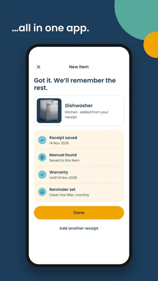
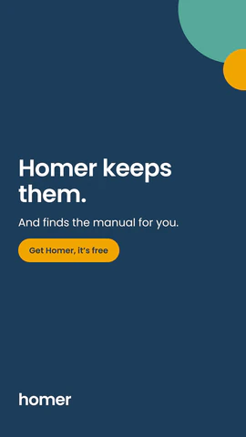
Art directing AI
Every image is AI-generated and art-directed by me.
I set the rules as I went.
Brand in the frame, not in the furniture
Real homes, real colours.
No circles behind products
They felt childish.
Never AI-generated people
Only homes, rooms and products.
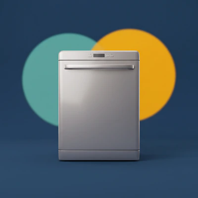
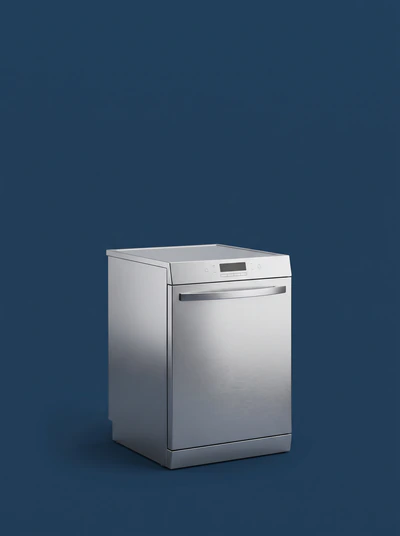
What I learned
What I learned.
AI is great for mood and motion, but weak at real UI and small details.
When AI kept adding things, simpler techniques gave me more control than more prompting.
Planning space for text early saved rework later.
Next, I’d test the content with real homeowners and measure saves, shares and demo requests.